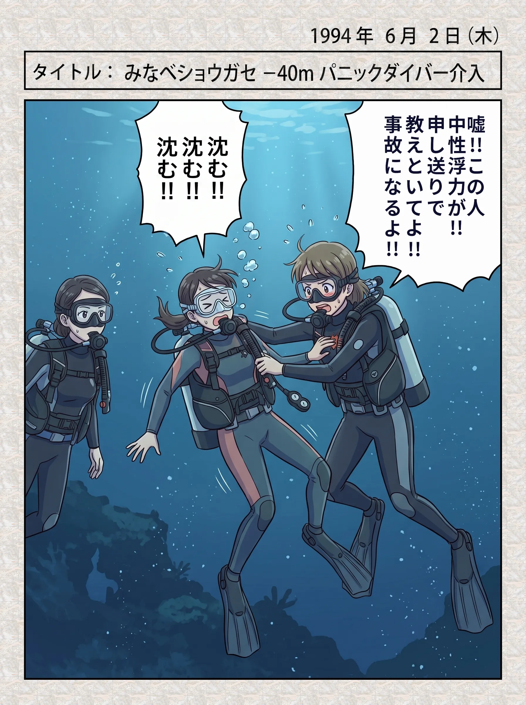

The road Orz passed by 2026 年 05 月
05 月 11 日 ( 月 )
Dive #155 絵日記 1994/06/02(Thu) みなべショウガセ -40m パニックダイバーへの介入
この日から合計７回ほどショウガセに入りましたが、毎回誰かがこうなるので、毎回身の危険を感じながら介入していました。

プレブリーフィング（リーダーシップ候補生のためのゲスト向けのブリーフィング前に行われるブリーフィング、つまりスタッフの打ち合わせ）で訊いても、この人は危ないので注意しろとか、そういった話がないので、今日は大丈夫なのか？と思ってゲストに向けたブリーフィングで注意点を毎回言っていましたけれど、毎回これ。
しかもぼくに対する評価のためのデブリーフィングで、ぼくの指導担当インストラクターのジュンちゃんを除いて、あんたは準備が足りないとか、そんな抽象的な話しか出てこない。
準備ができてないのはお前らやろがーっ！！リーダーシップコースの指導計画くらい立てろやっ！！適当にやってんじゃねーっ！！って今なら思います。
ぼくの何がだめだったのかを唯一きちんと言葉で丁寧に説明してくれてたのは、ぼくの指導担当インストラクターのジュンちゃんだけでした。でもしっかりもののジュンちゃんでさえ、ダイブマスターコースのためのプレブリーフィングはやっぱりなかったのですけれど。
時間がないのはわかりますけど、それは前日までに店に来い、打ち合わせするから、と一言連絡すればいいだけのことです。
ゲストがぼくがブリーフィングで話した注意点を守れないのは、たぶん窒素酔いか、エントリーした途端にブリーフィングの内容がスコーンと頭から抜けるからなんだと思います。よくあることです。
だいたいブリーフィングにいろいろ詰め込みすぎです。事故発生時の責任回避対策なんでしょうけど、スタッフが A4 両面にコピーしたブリーフィングリストを見ながら話す分量なのに、あんなのゲストが覚えてられるわけがない。ブリーフィングの目的を履き違えています。
これを７回繰り返して、ぼくはショウガセが大っ嫌いになりました。こんなことを繰り返していたら、いつか事故になるって思ってました。
昨年の 9 月にとあるダイブマスターが、多分友人だと思うのですが若い OW ダイバーを串本に連れてきたのですが、どうにも OW の子が不安定で中性浮力もまともにとれず、ダイビング中、浮いたり沈んだりしている。
その連れてきた OW の子をダイビング中まるで存在しないかのように、無視して一人でダイビングを楽しんでいるそのダイブマスターの姿を見て、彼はお前のバディとちゃうんかい！？とダイビング中ずっとムカムカしながら、スタッフでもなんでもないぼくが面倒見てました。
しかもボートに戻ってから、そのダイブマスターが彼をショウガセの下まで連れて入ったって自慢するわけです。オレはすげーんだって言いたいわけですね。
内心ぼくはこのダイブマスターアホちゃうか？って思ってました。この若い男の子がショウガセで死んだらどうすんだ！？無責任過ぎるやろ！！って思ってました。
ダイブマスター候補生にしろアシスタント・インストラクター候補生にしろ、候補生って損害賠償責任保険に入れないので、もしゲストが事故ったらどうなるんでしょうね。
ぼくは現役のアシスタント・インストラクターではあったので損害賠償責任保険に入ってましたけど、保険の適応範囲はアシスタント・インストラクターの業務範囲に限られていましたからダイブマスターコース中にゲストが事故っていたらと思うと今でも背筋が凍ります。
でもですね、オオカワリイソギンチャク目的でショウガセに入る時って、ゲストは -40m より下に落ちようがないんですよ。-40m はショウガセの底なので。そのかわりオオカワリイソギンチャクを半パニックダイバーが踏み潰して蹴り散らかすことになりますけど。
だからとりあえずそれ以上落ちる心配はない。水深が理由で直接死ぬことはあまりない。
問題はゲストがほぼ全員おそらく窒素酔いだったか（窒素酔いだったかどうかは生理学的に不明）、半パニック状態だったってことでした。特に -40m での完全なパニック状態は致命的です。
パニックダイバーの多くはマスクをとレギュレーターを放り出して水面に向かおうとします。バディが近寄ればバディのレギュレーターを奪おうとします。行動が予測できません。
そうなる前にぼくは介入する必要がありました。完全なパニック状態になってコントロールを失ったゲストへの強制介入は、ぼくも巻き添えをくって命を落とすことを意味しています。介入が遅れると -40m にぼくとゲストの２人の死体が転がることになるので躊躇する時間なんてないんです。
危ないの「あ」の文字が頭に浮かぶ前に体が動いていないと間に合わない。介入するかどうするか判断していると間に合わない。間に合わなければ最低でも１人は死体になることになる。
介入したら死体が２つになるかもしれない。その２つの死体のうちの１つはぼくで。でもダイブマスターがそのファンダイブの最終責任者である以上、介入しないという選択肢はそもそもないわけです。
こんな馬鹿げたことを繰り返させられていたので、ぼくは、そこに潜る能力がまだない人は絶対に入れるな、ダイブマスター候補生であっても、アシスタント・インストラクター候補生であっても、1000 本以上の経験があるベテランでも入れるな、って考えになります。入ってもらうのは経験を積んでもらって、育ってからだって。
商売とか言ってる場合じゃねぇって。死なれたら終わる！！って。
- Category :
- #Records of Orz's Road
- #ダイビング
- #スクーバダイビング
- #ヒヤリハット
- #和歌山県
- #みなべ町
- #ショウガセ
- #水深-40m